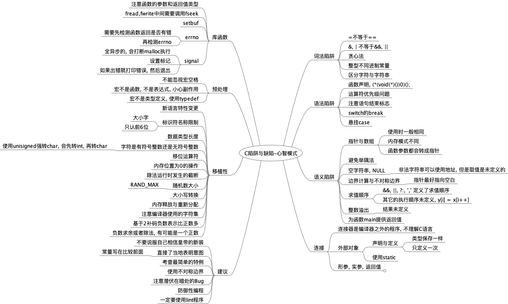

C陷阱与缺陷-心智模式

C陷阱与缺陷-心智模式
库函数
注意函数的参数和返回值类型
fread,fwrite中间需要调用fseek
setbuf
errno
需要先检测函数返回是否有错
再检测errno
signal
全异步的, 会打断malloc执行
设置标记
如果出错就打印错误, 然后退出
预处理
不能忽视宏空格
宏不是函数, 不是表达式, 小心副作用
宏不是类型定义, 使用typedef
移植性
新语言特性变更
标识符名称限制
大小字
只认前6位
数据类型长度
字符是有符号整数还是无符号整数
使用unisigned强转char, 会先转int, 再转char
移位运算符
内存位置为0的操作
除法运行时发生的截断
随机数大小
RAND_MAX
大小写转换
内存释放与重新分配
注意编译器使用的字符集
基于2补码负数表示比正数多
负数求余或者除法, 有可能是一个正数
建议
不要说服自己相信皇帝的新装
直接了当地表明意图
常量写在比较前面
考查最简单的特例
使用不对称边界
注意潜伏在暗处的Bug
防御性编程
一定要使用lint程序
词法陷阱
=不等于==
&, | 不等于&&, ||
贪心法
整型不同进制常量
区分字符与字符串
语法陷阱
函数声明, (*(void(*)())0)();
运算符优先级问题
注意语句结束标志
switch的break
悬挂case
语义陷阱
指针与数组
使用时一般相同
内存模式不同
函数参数都会转成指针
避免举隅法
空字符串, NULL
非法字符串可以使用地址, 但是取值是未定义的
边界计算与不对称边界
指针最好指向空白
求值顺序
&&, ||, ?:, ',' 定义了求值顺序
其它的执行顺序未定义, y[i] = x[i++]
整数溢出
结果未定义
为函数main提供返回值
连接
连接器是编译器之外的程序, 不理解C语言
外部对象
声明与定义
类型保存一样
只定义一次
使用static
形参, 实参, 返回值
未声明函数参数, 那么类型默认int, double
返回值未声明, 默认int